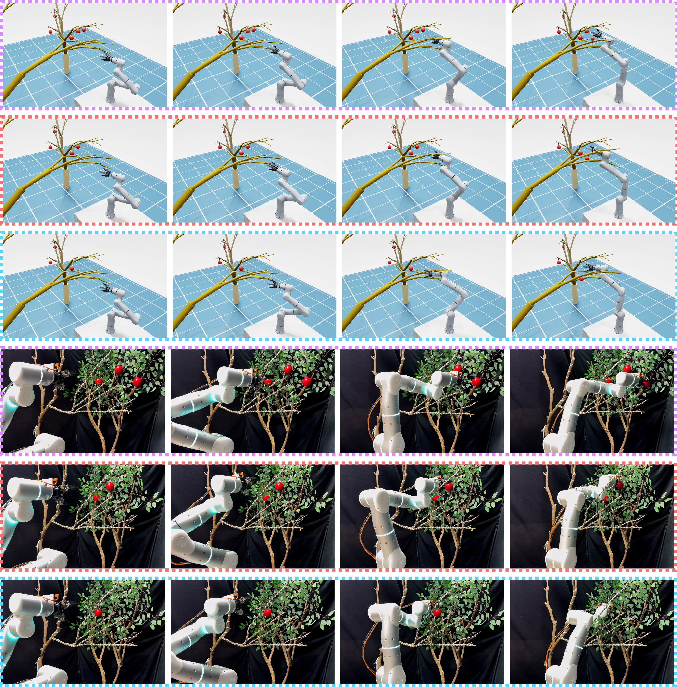

Normalized force and deflection utilization
Arm-link contact forces and branch-joint deflections are mapped to continuous robot-contact and plant-damage risk indicators.
IEEE Robotics and Automation Letters submission
Margin-Aware Residual Reinforcement Learning for Pre-Harvest Reaching in Deformable Fruit Canopies
A behavior-cloned IK prior handles nominal reaching, while residual PPO learns local Cartesian corrections from normalized contact-force and branch-deflection utilization.
Problem
Robotic fruit harvesting often requires reaching through compliant branches before grasping. A zero-contact planner is too conservative in dense vegetation, but a success-only learning objective can push through branches with excessive force or deflection.
MarginReach makes the safety trade-off explicit by converting robot-link contact forces and branch-joint deflections into normalized utilization signals. These signals expose how close the robot and the surrounding branches are to their admissible mechanical limits during pre-harvest reaching.
Contributions
The current RAL manuscript separates nominal reaching from mechanically safe reaching and evaluates both in simulation and hardware.
Arm-link contact forces and branch-joint deflections are mapped to continuous robot-contact and plant-damage risk indicators.
A frozen behavior-cloned reaching prior supplies smooth nominal motion, and PPO learns reactive Cartesian residuals guided by utilization signals.
Held-out procedural canopies and 30 physical trials per method report SR, SSR, COR, and BOR rather than only nominal success.
Environment
Each episode instantiates a fruit-bearing target tree and an independently sampled obstacle tree in Isaac Lab.

Randomized sympodial L-system parameters synthesize target and obstacle trees with branch diversity.
Rigid branch segments are connected by spring-actuated revolute joints with bending-limit estimates.
The policy reaches a 10 cm pre-harvest standoff band while avoiding force and deflection overload.
Controller
The residual policy acts in a 6-D Cartesian pose-increment space and is executed through damped-least-squares IK with low-pass filtering.

Force readings from monitored robot links become normalized proximity-to-limit signals.
Branch deflection is measured relative to the settled passive angle and bending threshold.
The learned residual starts near zero and adapts the nominal reaching command near contact.
Videos
The website now includes both requested videos: randomized Isaac Lab rollouts and physical Flexiv Rizon validation through branch clutter.
The clip shows reaching through randomized compliant branch interference.
The clip shows physical trials with target fruit proxies and an obstacle tree.
Results
SR measures task completion. SSR only counts successful rollouts that remain within both robot contact-force and branch-deflection limits.
End-effector reaches the pre-harvest standoff band with the required approach orientation.
SR condition plus no contact-force overload and no branch-deflection overload.
Any monitored arm link reaches or exceeds its force-utilization limit.
Any fruit-tree or obstacle-tree branch exceeds its utilization limit.
| Setting | Method | SR (%) | SSR (%) | COR (%) | BOR (%) |
|---|---|---|---|---|---|
| Simulation | PCAP | 73.6 | 54.2 | 14.9 | 33.1 |
| Simulation | Fruit-Discovery RL | 83.4 | 36.8 | 27.5 | 45.7 |
| Simulation | MarginReach | 79.3 | 63.5 | 9.8 | 14.4 |
| Real | PCAP | 73.3 | 50.0 | 16.7 | 33.3 |
| Real | Fruit-Discovery RL | 66.7 | 33.3 | 30.0 | 43.3 |
| Real | MarginReach | 76.7 | 60.0 | 13.3 | 23.3 |



Ablation Study
Learning-framework variants test the role of the BC prior and residual decomposition. Margin variants isolate contact observation, contact penalties, and branch penalties.
| Group | Variant | SR (%) | SSR (%) | COR (%) | BOR (%) |
|---|---|---|---|---|---|
| Learning | BC Prior | 92.4 | 26.7 | 54.1 | 61.8 |
| Learning | Vanilla PPO | 79.2 | 39.5 | 43.7 | 52.3 |
| Learning | BC-Initialized PPO | 81.6 | 42.8 | 40.4 | 51.9 |
| Margin | w/o contact observation | 72.1 | 53.6 | 20.8 | 27.4 |
| Margin | w/o contact penalty | 67.9 | 42.2 | 26.5 | 19.7 |
| Margin | w/o branch penalty | 72.3 | 59.1 | 11.6 | 26.2 |
| Margin | w/o margin penalties | 86.8 | 31.4 | 46.9 | 53.5 |
| Full | MarginReach | 79.3 | 63.5 | 9.8 | 14.4 |
Resources
Static project materials for the current anonymized RAL draft.